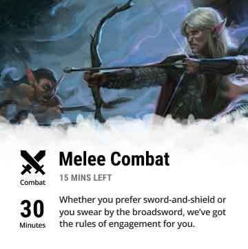
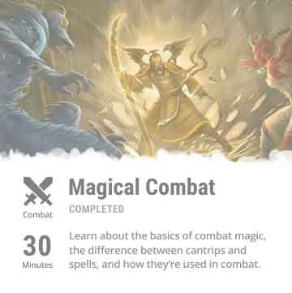

D&D Beyond Tutorials
When:
October 2018
Tools:
- Illustrator
- Figma
- Keynote
- Photoshop
Role:
- Information design
- interaction design
- copywriting
- journey mapping
- user testing
The Project
This was a 4-week project to design a hypothetical product for Wizards of the Coast to ease barriers to entry for newcomers who want to learn how to play Dungeons & Dragons, by leveraging the D&D Beyond mobile app.
The outcome was a redesign of the D&D Beyond app to make the information in game manuals and guides more accessible through a new tutorial section for new players about the basics of Dungeons & Dragons, and including more of the classic Dungeons & Dragons visual language.
My Role
My role during the class was content strategy, copywriting and editing, interaction design, wireframing, journey mapping, and user testing.
I revisited this project on my own after the course was over, focusing on integrating more classic Dungeons & Dragons visual language, and streamlining the onboarding and lesson modules.
Initial Research
The initial business problem we identified was the lack of Dungeon Masters (players who run D&D games). But the question was, why? And how could we help prospective Dungeon Masters get to their first session?
We started looking for the answer to our questions by surveying and interviewing both existing and prospective Dungeons & Dragons players, as well as conducting secondary open-source research.
Insights
- A reason why players are hesitant to become Dungeon Masters is because of the perceived amount of information they feel they have to know.
- Many of the players surveyed learned how to play Dungeons & Dragons through media, such as watching videos, rather than reading the manuals.
- Players became interested in Dungeons & Dragons because of the creative freedom and storytelling.
Journey Mapping
Based on our interviews and survey data, I created a user journey framework for our persona: someone who plays board games socially learning how to run a Dungeons & Dragons game for their friends.

Pain Points
Our initial assumption prior to research was that a major pain point would be the presentation of information, as Dungeons & Dragons as a game is presented through a series of text-heavy books and manuals.
It turned out the actual pain point was intimidation regarding the Dungeon Master role, and worry about messing up other players' experience. However, after speaking to experienced Dungeon Masters and players, we found that the benchmark of a good Dungeon Master is not how much they know, but rather, how smoothly and convincingly they are able to improvise on the spot.
Framing
How might we design a low-stakes environment for a new Dungeon Master to learn what they need to know to get started and get an accurate idea of what running a game is like?
Iterating

The first iteration of our prototype was in the form of an interactive tutorial in the form of an immersive roleplaying scenario. Newcomers would be introduced to a scene commonly found in roleplaying games, and learning points such as dice rolling and combat would be introduced throughout using tooltips. This allowed them to learn and practice at the same time.
I conducted user tests with our first prototype with 5 individuals, including both existing Dungeons & Dragons players and prospective players. I took typewritten notes while observing their progression through our prototype, and asked follow-up questions both during and after.
While user testers found the prototype enjoyable overall, there were some points where the tester wanted to skip ahead because they already knew the information and were frustrated when they could not. This showed our approach was too linear. Furthermore, because the learning points were displayed as tooltips, some users became confused about the importance of the information. This showed that we needed to work on the hierarchy of our information presentation.
Re-framing
Target Audience
As we analyzed pain points for our persona, we found that many of them were not isolated to Dungeon Masters, but also experienced by newcomers learning to play Dungeons & Dragons in general. As a result, we adjusted our target audience to be inclusive of all newcomers to Dungeons & Dragons.
Concept
It was another research insight that helped us move forward into our next iteration. We found that many players learned about Dungeons & Dragons gameplay mechanics from family and/or friends. This led us to ask ourselves:
How might we introduce a newcomer to Dungeons & Dragons in a way that a friend might?
Final Iteration for Class
Landing Screen
When a newcomer opens the app, they are shown a landing screen with a hero card at the top promoting a questionnaire for receiving a custom lessons module for beginners. The second half of the page contained a list of books and manuals offered for purchase or download.
However, this leaves a hole in the content when the newcomer completes the module. Would the hero section stay there? Would it allow the newcomer to re-take the questionnaire? It was clear this needed revision.
Lesson Modules
The getting-started modules came in two forms that newcomers can choose from: an immersive, interactive tutorial, or reading through the learning points at their own pace.
However, this was not very well integrated, which made the two options feel disconnected rather than part of the same learning module. Furthermore, the immersive tutorial was still too linear as a learning method.
Vocabulary
Our proposed solution for tackling the jargon of Dungeons & Dragons was tooltips that would pop-up with a definition when the highlighted word was tapped. However, this posed a usability issue for 2 reasons: it looked too much like a link, and it would clash where a vocab word was already part of another interactive element (for example, the questionnaire options).
Revisiting after Class
After the class was over, I spent some time revisiting the project on my own to incorporate feedback we received on our final iteration, as well as streamlining the onboarding, and delivery of tutorial content. I used Figma for prototyping and Photoshop for image treatment.
Onboarding
One pain point was that D&D Beyond lacked an onboarding experience, making it unclear what the app offers. As a result, I designed a short, 2-page onboarding sequence that leads into a questionnaire offering custom tutorials for getting started. There is also the option to skip this and go directly to the app, for seasoned veterans of the game.

For newcomers, the questionnaire focuses on their previous roleplaying experience, as well as what areas of Dungeons & Dragons they’re specifically interested in. This helps provide a personalized getting-started experience, which can help engage a newcomer more deeply with the world of the game from the get-go.
Tutorials Dashboard
I redesigned the tutorials dashboard in order to have more information available upfront. This allows the newcomer to easily scan through the page to find topics and tutorials they may be interested in, and to see at a glance which modules they've already completed.
Default

In-progress
Completed
Immersive Scenario
Instead of being a learning method, I changed the immersive scenario to a test of the newcomer’s knowledge on the learning points in that module. This removes the linearity of learning through the tutorial, while keeping the immersive narrative experience that drew many people into the Dungeons & Dragons world in the first place.
In the scenario, the newcomer chooses actions based on the learning points from the module. Because Dungeons & Dragons is a game open to creativity and rule-bending, I chose not to include a “game over” state. Instead, the scenario continues with whatever option the newcomer chooses, though with a reminder of the “suggested” option.
Visual Language
We received feedback at the end of the course that our visual design was not representative of Dungeons & Dragons branding.
When I revisited the project, I took inspiration from the visual design of Dungeons & Dragon’s 5th edition manual. I used full-bleed images treated with watercolour fading in Photoshop and grainy, paper textures to invoke a vintage, fantasy storybook feeling.


I kept the existing type from the D&D Beyond website, as I was already changing the visual language of the app so drastically. Since the app is part of a multi-platform toolset, it was important to maintain some areas of consistency across platforms.
Reflection
This project was difficult due to the sheer amount of information we were attempting to convey, without oversimplifying it to the point of losing key parts of the game. At first, one of our goals was to prepare a player enough so they don't have to search up information during the game session itself. However, we realized this was simply not feasible, so we aimed for a more achievable goal of simply introducing the basics.
During the course itself, I was not heavily involved in the visual design of the app, and my role in the interface design was limited to wireframing the landing page and questionnaire. When I revisited the project after the course, I worked on the visual language as well as reworked the interface design. I was able to become much more familiar with Android app design patterns as well as general usability principles.
Project created with Simranjit Bagga, Emily Hui, Momchil Kutev, Alireza Mogharrab, and Janet Ouyang.